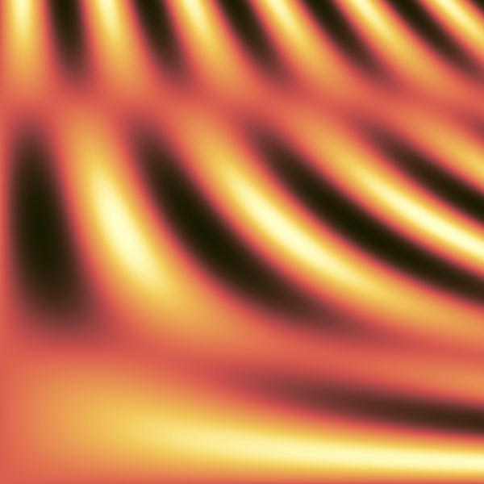

ForColormap

The ForColormap Fortran library is independent of any graphical toolkit: its main functionality is to convert a real value to RGB values that you can use with any drawing toolkit. It includes:
- the 222 colormaps of the "Scientific Colour Maps" collection v8.0.1 by Fabio Crameri. They are perceptually uniform, perceptually ordered, colour-vision-deficiency friendly, readable as black-and-white print and citable. They are classified into different palette types (continuous; discrete; categorical) and gradient types (sequential; diverging; multi-sequential; cyclic).
- The "magma", "inferno","plasma", "viridis" matplotlib colormaps are also perceptually uniform, perceptually ordered, colour-vision-deficiency friendly, readable as black-and-white print.
- The Dave Green's cubehelix colormap is designed to be monotonically increasing in terms of its perceived brightness and readable as black-and-white print. It is citable.
- The "black_body" colormap is perceptually uniform, perceptually ordered and readable as black-and-white print.
- The "zebra" colormap is black and white.
- A few basic colormaps with no specific properties: "fire", "rainbow", "inv_rainbow".
ForColormap also offers various methods and options to manage colormaps.
It is distributed under the MIT license.
Basic usage
Assuming your graphical library has a classical setpixelrgb() function and you know your z values will be for example in the [0, 2] range, you can write something like:
use forcolormap, only: Colormap, wp
...
type(Colormap) :: cmap
integer :: red, green, blue
real(wp) :: z, x, y
...
! Let's use the lajolla Scientific colormap:
call cmap%set("lajolla", 0.0_wp, 2.0_wp)
...
z = f(x,y)
call cmap%compute_RGB(z, red, green, blue)
call setpixelrgb(x, y, red, green, blue)



Documentation
The full documentation is available at https://vmagnin.github.io/forcolormap/
You will find there tutorials, how-tos, references and other explanations.